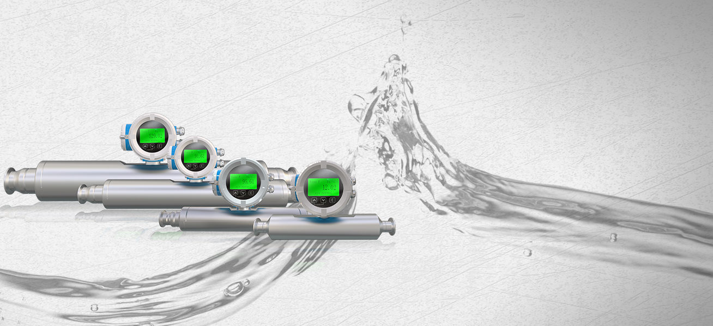
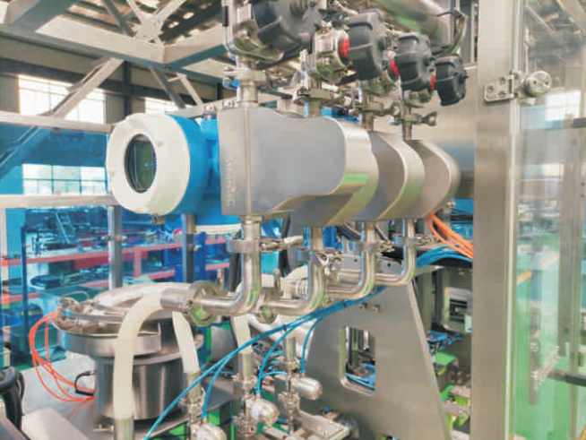

Массовые расходомеры Mass-EXPERT для измерения и дозирования широкого спектра пищевых продуктов и напитков — от жидких молочных продуктов до высоковязких шоколадных масс и паст. Гигиенический дизайн с шероховатостью Ra ≤ 0,8 мкм, санитарные соединения Tri-clamp и полная CIP/SIP-очистка без демонтажа обеспечивают соответствие самым строгим стандартам пищевой безопасности.
Кориолисовые расходомеры Mass-EXPERT в гигиеническом исполнении работают с широким спектром пищевых сред — от маловязких соков до высоковязких шоколадных масс и паст.
Глазурь, шоколадная масса, какао-масло, начинки, пралине, ореховые пасты. Высокая вязкость требует прямоточных сенсоров L-типа без застойных зон.
Глюкозные, фруктозные, инвертные сиропы, патока, мёд, кленовый сироп. Высокая плотность и вязкость не влияют на точность массового измерения.
Томатная паста, кетчуп, майонез, горчица, соевый соус, овощные пасты. Прямотрубная конструкция исключает забивание и облегчает CIP-мойку.
Молоко, сливки, сгущённое молоко, йогурт, кефир, сыворотка, мороженое. Кориолисовые расходомеры — стандарт для учёта молока на приёмке.
Фруктовые и овощные соки, концентраты, нектары, безалкогольные и слабоалкогольные напитки. Измерение Brix и плотности в одном приборе.
Этанол/спирт (пищевой), ликёры, настойки, растительные экстракты, ароматизаторы. Прямое измерение массового расхода без влияния плотности.
Растительные масла (подсолнечное, оливковое, пальмовое), животные жиры, маргарин. Измерение массового расхода от холодного до горячего.
Расходомеры Mass-EXPERT в гигиеническом исполнении соответствуют строгим требованиям пищевой промышленности и обеспечивают безопасность продукции и лёгкость санитарной обработки.
В отличие от многих традиционных расходомеров, кориолисовые сенсоры Mass-EXPERT в гигиеническом исполнении не требуют демонтажа для санитарной обработки. Прямотрубные сенсоры L-типа и W-типа с шероховатостью Ra ≤ 0,8 мкм выдерживают CIP-мойку (горячая вода / щелочные и кислотные растворы при скорости потока до 1,5 м/с) и SIP-стерилизацию (насыщенным паром при температуре до 140 °C). Это радикально сокращает время переналадки между партиями и исключает риск вторичного загрязнения при обслуживании.
Кориолисовая технология прямого массового измерения — оптимальное решение для гигиеничного учёта и дозирования пищевых продуктов
Шероховатость контактных поверхностей Ra ≤ 0,8 мкм. Санитарные соединения Tri-clamp. Соответствие 3-A. Отсутствие застойных зон.
Мойка и стерилизация без демонтажа сенсора. Выдерживает температуры CIP-мойки до 140 °C и скорости потока до 1,5 м/с.
W-тип с конфигурацией для полного слива. Смена продуктов без промывки — идеально для многономенклатурного производства.
Независимость от вязкости, плотности, температуры и профиля потока. Идеально для вязких паст, шоколада, мёда и сиропов.
Одновременное измерение массового расхода и плотности. Расчёт концентрации (Brix) для соков, сиропов и спиртов.
Нет подвижных частей, не требующих замены уплотнений. Снижение эксплуатационных затрат и времени простоев на обслуживание.
Для особо вязких пищевых продуктов — томатной пасты, шоколада, мёда, ореховых паст — Mass-EXPERT предлагает сенсоры L-типа (прямотрубные). Отсутствие изгибов измерительных трубок исключает застойные зоны и минимизирует гидравлическое сопротивление. В сочетании с Ra ≤ 0,8 мкм и Tri-clamp соединениями это лучшее решение для пищевых производств с высокими требованиями к гигиене.


Проверенные комбинации сенсоров, типов соединений и опций для типовых задач пищевых производств и напитков
Рекомендованы для вязких и пастообразных пищевых продуктов. Отсутствие изгибов исключает застойные зоны и упрощает CIP/SIP-очистку.
Санитарные соединения Tri-clamp (DIN 32676 / ISO 2852) и шероховатость Ra ≤ 0,8 мкм — соответствие строгим стандартам пищевой безопасности.
Специальная конфигурация измерительной камеры для полного слива продукта. Идеально для смены продуктов без промежуточной промывки.
Выбор трансмиттера в зависимости от потребностей в цифровых интерфейсах, взрывозащите и функциональности.
Для высоковязких продуктов (томатная паста, шоколад, мёд): сенсор L-типа
+ Tri-clamp + Ra ≤ 0,8 мкм + трансмиттер ME200.
Для жидких продуктов с частой сменой (соки, сиропы, молоко): сенсор W-типа
(самоопорожнение) + Tri-clamp + трансмиттер ME100.
Для учёта спиртов и экстрактов: сенсор L-типа или U-типа + 316L +
трансмиттер ME200 с HART/Modbus.
Наши инженеры помогут выбрать оптимальный тип сенсора, санитарное исполнение и трансмиттер для вашей пищевой задачи — от молочной фермы до кондитерской фабрики.
Связаться с нами На главную